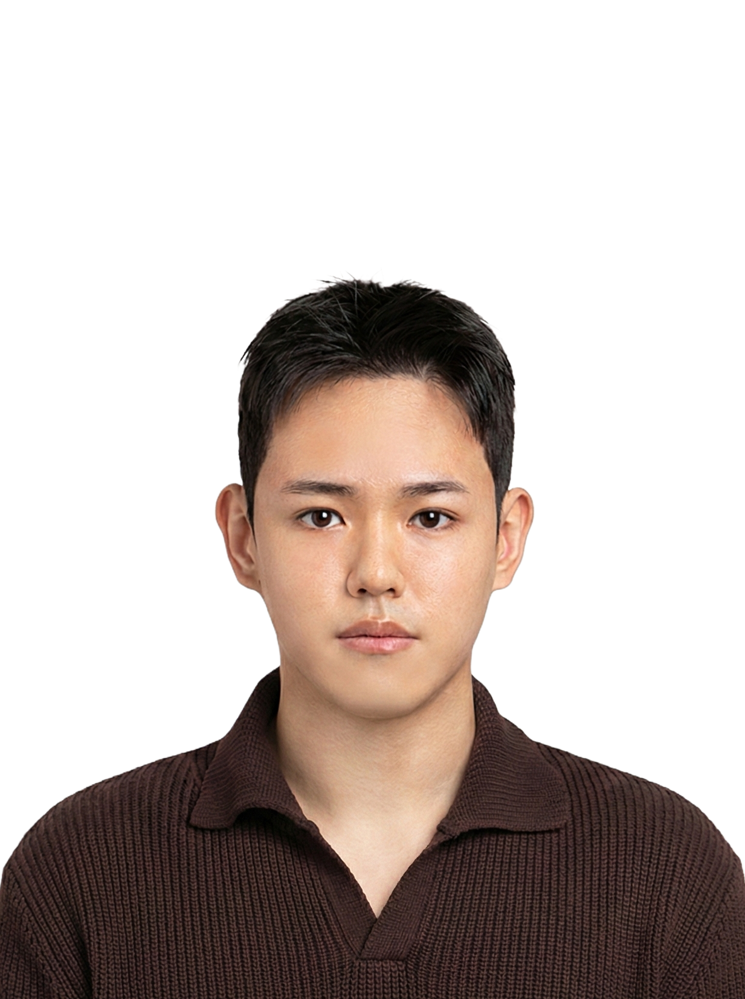

|
Jimin Jeon I'm an undergraduate student at GIST, majoring in Electrical Engineering and Computer Science (EECS). I'm currently working as a research intern at AILAB, supervised by Prof. Kyoobin Lee. My research interests focus on robot learning, particularly Imitation Learning and Video-to-Robot manipulation. |
 |
{kind=link}
Projects |

|
DexTel: Single-Camera Real-Time Teleoperation System
Project at HUSL (UHart), 2026 A real-time teleoperation system for the UR3e robot using a single Realsense D455 camera. Utilizes MediaPipe and HaMeR for high-fidelity hand tracking and Dex-Retargeting for optimization-based motion mapping, enabling intuitive control without wearable devices. |

|
R2S2R Block Stacking
Project at AILAB (GIST), 2026 A robust robotic manipulation system that stacks blocks on unstable towers using multi-view perception, Isaac Lab physics simulation, and domain randomization for reliable sim-to-real transfer. |

|
Manipulation for Energy Facility Management
Project at AILAB (GIST), 2025 This project implements an energy facility management system using dual Franka Panda robots with GELLO-based teleoperation and ACT policies trained from human demonstrations. |
|
Template from Jon Barron |